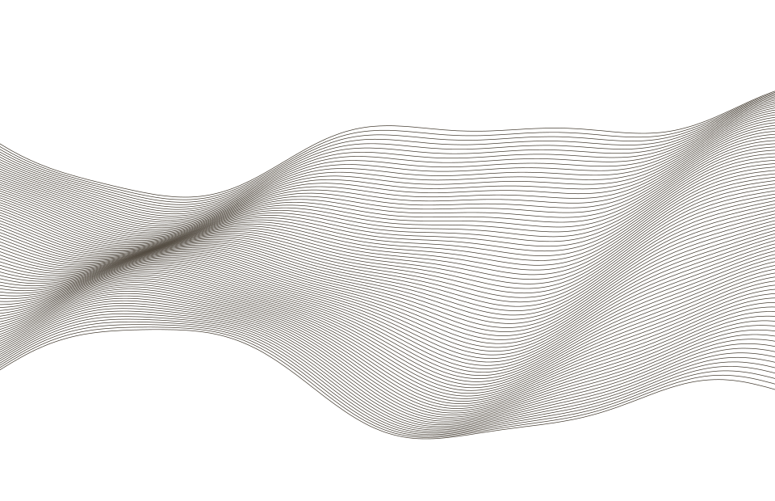
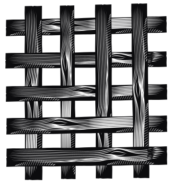

Endpoint security by SORAMITSU
On-device AI.
Even offline.
KUJI examines files and follows what programs do. Its models run on the machine, even when the network is out of reach.
Explore the demoOn-device analysis
What makes a
program suspicious?
- Inside the file
- KUJI checks executable structure and byte patterns against detection rules. For Mach-O files, a local model adds a risk score.
- While it runs
- Related events can tell a different story than a single file. KUJI looks for patterns such as documents being rewritten while a related process targets backups.
- On this machine
- A backup tool contacting an unfamiliar server gives investigators a lead. KUJI learns local relationships after a delay and excludes activity linked to incidents.
Behavioral detection
Replay a
ransomware pattern.
Watch a recorded run of KUJI’s offline demo. A program rewrites documents across several folders while a related process targets backups.
KUJI connects the activity and reports two critical findings. All 294 events are simulated.
kuji sim ransomware_fast
ransomware_fast
Backups or recovery are being destroyed
Possible destructive file activity
294 events · 2 findings
The local app
A scan starts
right here.
A quick scan covers Downloads, the desktop, temporary files and startup locations. Choose a full scan to check local disks. The app reports findings and tells you where coverage is incomplete.

Air-gapped updates
Carry the update
across the gap.
Bring a signed release in on removable media, or distribute it through an internal share or portal. KUJI checks signatures from both SORAMITSU and your organization before it accepts the release.

KUJI by SORAMITSU